프롬프트에 곁들인 신호는 AI의 답을 바꾸는가?
ChatGPT·Gemini·Claude 세 AI에 대한 반복 실험.
대학 3년 반 동안 나는 전속력으로만 달릴 줄 알았지만, 지금은 그 속도를 조절하는 법을 배우고 있다.
숭실대학교 전자정보공학부 IT융합전공은 회로 설계, 통신, 반도체 공정, AI, 임베디드까지 길이 넓게 갈린다. 그래서 한 학기에 전공 수업을 여섯, 일곱 개씩 듣는 게 당연한 속도였다. 7학기를 마치고도 쉬지 않고 세 번째 계절학기를 들었다. 학기가 끝나도 곧장 다음 학기로 넘어가는 생활이 몇 해째 이어지고 있었다.
세 번째 계절학기를 마치고 8일 동안 일본에 다녀왔다. 쌓인 것을 털어 내고 돌아와서는 같은 페이스로 학기를 다시 시작하지 않기로 했다. 취업 준비에 제대로 집중하고 싶은 마음과 잠깐 숨을 돌리고 싶은 마음이 함께 나를 움직였다. 반년 휴학을 하고 서울에서 부산으로 내려와 2026년 8월에 알레프 과정을 시작했다.
환경을 바꿔도 습관은 따라왔다. 수업이 끝나면 집에 돌아와 휴학 중에도 맡고 있던 동아리 홍보국장 일로 홍보물을 만들고 있었다. 이날 아침 리추얼 기록에 이렇게 적었다. "육체적으로 지친 상황이었지만 맡은 일을 항상 책임지고 하며 좋아하는 일을 포기하지 않았다." 여섯, 일곱 과목을 한꺼번에 짊어지던 학기와 같은 힘이었다. 정보처리기사 필기를 이틀 앞두고 18시간 잠을 자지 않고
공부해 합격했던 것도 같은 힘이다. 달라진 것은 하나였다. 이번에는 그 힘을 쏟을 곳을 내가 골랐다.
막히는 순간에도 최소 5분은 더 붙잡아 보고 나서 질문하기로 했다. 버그와 5분을 더 씨름하고 물었더니 질문이 훨씬 구체적이고 정확해졌다. 9월 21일에는 누가 시키기 전에 내가 먼저 계획을 세우고 움직였다.
일을 시작하기 전에 할 일을 순서대로 적고 하나씩 지워 나갔다. 하루가 덜 흔들렸다. 10월 8일에는 할 일이 몰렸는데 서두르지 않고 순서부터 정리했다. 달리는 힘을 없애지 않고, 멈추고 정리하는 자리를 따로 만든 것이다.
병원에 다녀와 오후 리추얼에서 머뭇거리던 동료에게 먼저 말을 걸어 조별 토론에 함께하게 했다. 조가 바뀐 날에는 새 조원들을 위한 채팅방부터 만들고 인사했다. 일에 쏟던 힘의 일부를 사람에게 쓰기 시작했다.
지금도 나는 아침 아홉 시부터 저녁 여섯 시까지 알레프에 나간다. 그래도 주말에는 가끔 바다에 가기도 하고, 하고 싶은 일과 해야 할 일과 쉬어야 할 일의 자리를 나눠서 하루를 쓴다. 멈추지 못해서 달리던 사람이 이제는 하루를 마칠 때 스스로 돌아보고 기록한다.
그 기록이 아래에 있다.
앞으로도 나는 끝까지 붙잡는 사람일 것이다. 다만 이제는, 그 힘을 더 오래, 더 잘 쓰는 방법을 안다.
장면의 날짜와 인용은 리추얼 기록(2026-08-11 ~ 2026-10-12)에서 가져왔고, 서울 시기 이야기는 본인이 쓴 서사 문서 기준입니다.
고난 장면과 짝
쉬지 못하고 달리던 시기의 반대편에, 하루를 마무리하며 스스로 돌아본 기록이 쌓였습니다.
위의 "마무리 기록"이 그 숫자입니다.
작은 숫자도 그대로 적었고, 각 칸 아래에 출처를 적었습니다.
새로운 걸 배우기 전에 미리 뭘 알아야 하는지 목록으로 정리하고, 정리한 순서대로 하나씩 처리해나갔던 적이 있다.리추얼 기록 2026-09-07 [아침] 강점이 드러난 일화
막상 닥쳐서 허둥대지 않고 여유 있게 끝낼 수 있었다.
어제 주변 동료 분이 병원에 갔다 늦게 오셔서 오후 리추얼 때 머뭇거리고 계셨는데 먼저 말걸어서 조별 토론에 함께 참여하실 수 있게 도와드렸다.리추얼 기록 2026-08-13 [아침] 강점이 드러난 일화
버그를 붙잡고 5분 더 씨름한 뒤 질문했더니, 질문 자체가 더 구체적이고 정확해졌다.리추얼 기록 2026-09-03 [마무리] 강점을 위해 노력하고 생각한 것
ChatGPT·Gemini·Claude 세 AI에 대한 반복 실험.
마지막 과제 B 승인 후 제출 예정입니다 (2026년 10월 말 목표).
완성되면 이 자리에 링크가 들어갑니다.
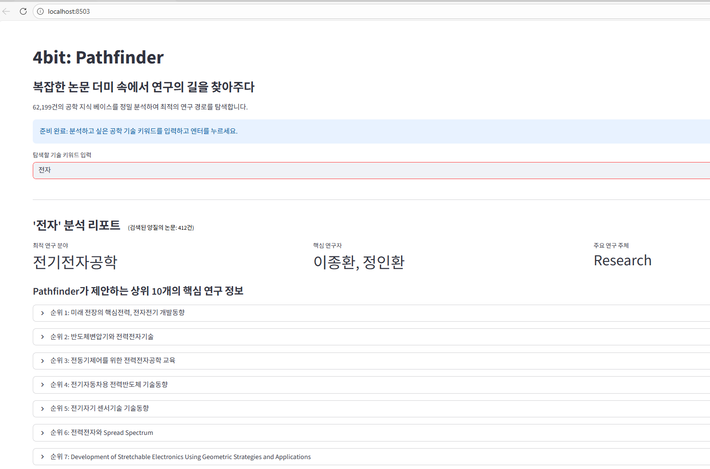
62,199건 논문 데이터의
키워드 결측치를 복구해,
FAISS 기반 연구자·기관
추천 엔진을 만들었습니다.
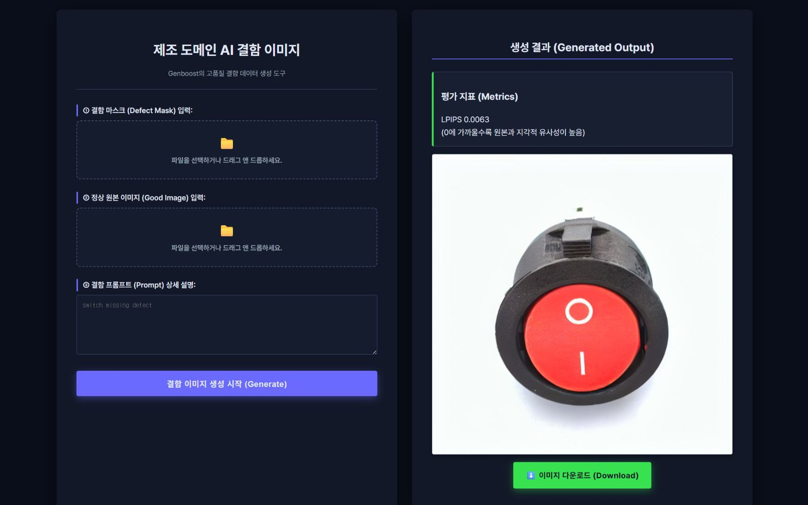
Stable Diffusion·ControlNet으로
제조 결함 이미지를 생성해,
학습 데이터 부족 문제를
해결했습니다.
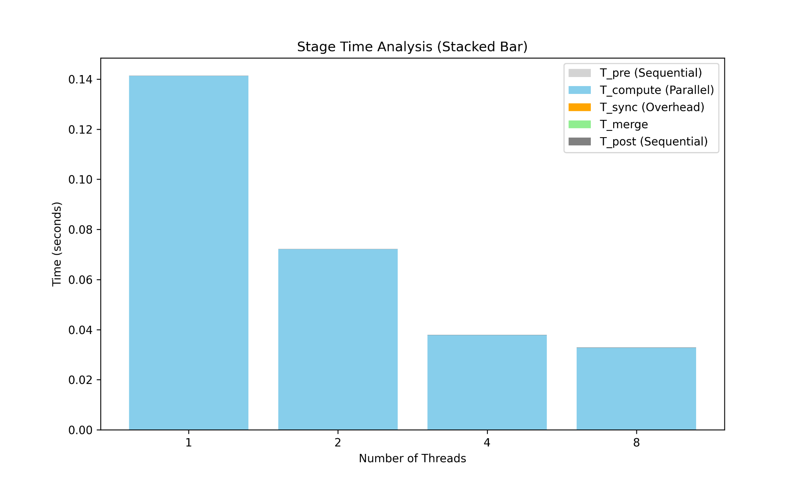
5가지 병렬 처리 구조를
직접 구현해, 워커 수와
실행 효율의 관계를
수치로 입증했습니다.
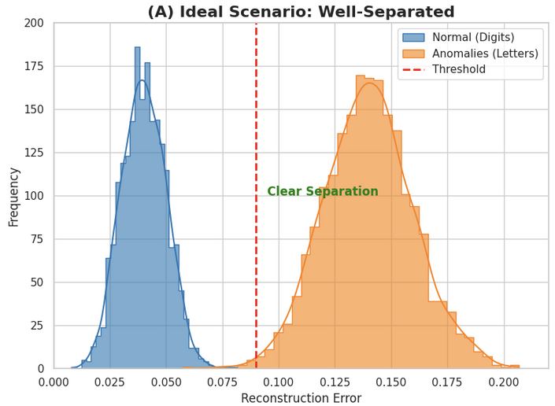
심각한 과적합의 원인을
하이퍼파라미터별로 실험해,
Test Accuracy를 81%까지
끌어올렸습니다.
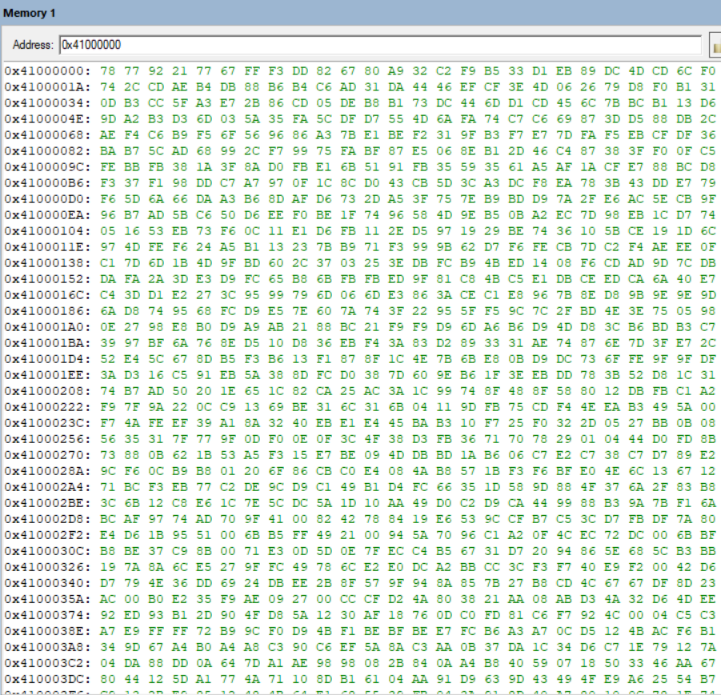
ARM 어셈블리로 이미지 색
반전 연산을 구현하고,
링커 충돌 문제를 직접
분석해 해결했습니다.
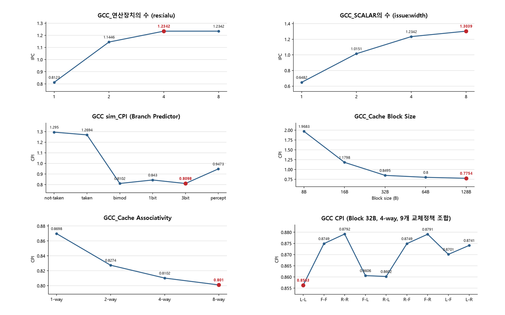
SimpleScalar로
프로세서·캐시 구성을 바꿔가며,
4개 벤치마크로 성능 변화를
정량 분석했습니다.
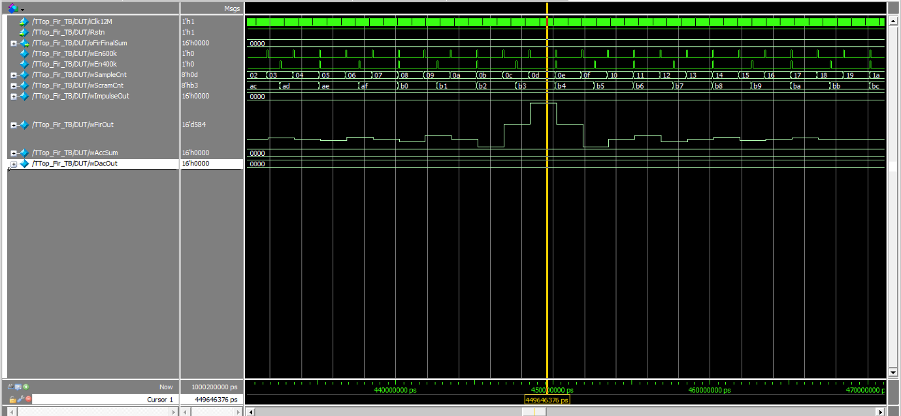
21-tap 재구성형 FIR 필터를
Verilog로 설계해,
계수 변경 중 파형이 깨지는
문제를 해결했습니다.
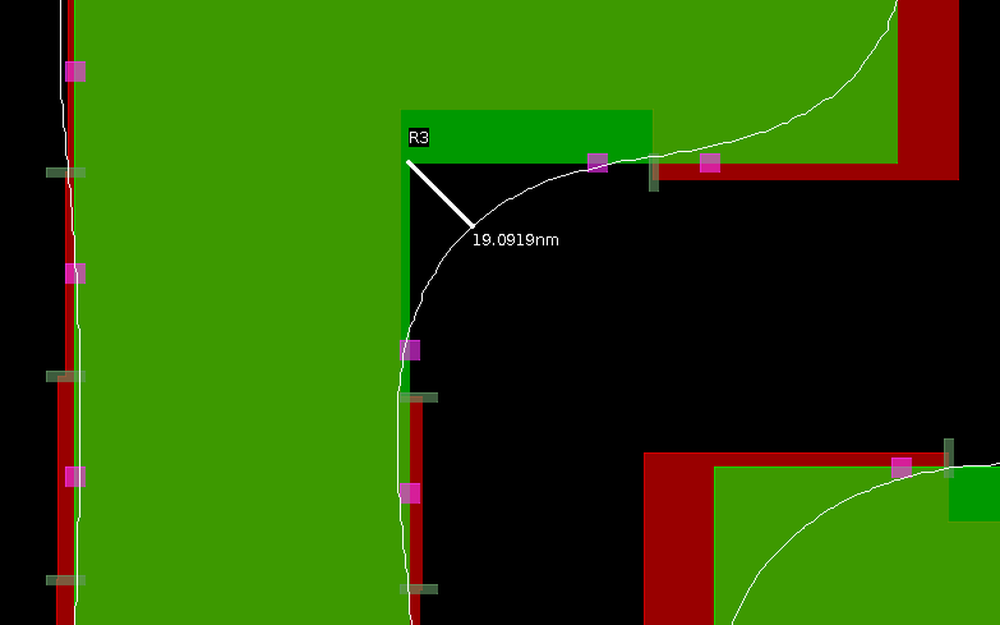
default·split recipe로
OPC를 수행해, Corner
Rounding을 24.39nm에서
19.1nm로 줄였습니다.
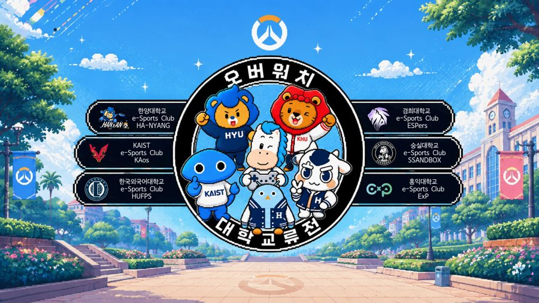
신입부원 모집·개강총회·
대표팀 모집·교류전 화면·
로고까지 홍보국장으로서
만든 작업물입니다.
gamedh823@gmail.com
62,199건의 공학 분야 논문 메타데이터를 다뤘는데, 트렌드 분석에 가장 중요한 키워드(KYWD) 필드가 26.38%나 비어 있었습니다.
이 상태로는 정확한 연구 동향 분석이 불가능했고, 설령 키워드가 있어도 사용자가 입력한 검색어와 논문 제목의 단어가 정확히 일치하지 않으면 관련 논문을 못 찾는 문제도 있었습니다.
데이터 전처리부터 모델링 및 최적화까지의 파트를 맡았습니다.
결측치를 그냥 버리지 않고, 논문 제목에서 단어를 추출해 채우는 방식을 택했습니다. 긴 단어부터 우선 매칭되도록 정렬한 master_vocab 사전을 만들고, 동의어를 하나로 묶는 매핑과 140여 개 불용어 사전으로 노이즈를 걸러 제목에서 키워드를 역추출했습니다.
논문 제목을 ko-sroberta-multitask로 임베딩하고 FAISS 인덱스에 넣어, 62,199건 전체를 실시간으로 유사도 검색할 수 있게 만들었습니다.
Streamlit으로 “4bit Pathfinder”라는 대화형 웹 UI를 만들어, 키워드를 입력하면 관련 연구 분야·핵심 연구자·주요 기관을 바로 보여주도록 구성했습니다.
키워드 결측치 26.38%를 제목 기반 역추출로 복구했더니 77.39%가 복구되어 최종 데이터 충전율 94.0%를 달성했습니다.
검색 결과에는 “소개”, “안내”, “공지” 같은 연구와 무관한 행정성 노이즈가 섞여 들어오는 문제도 있었는데, 이런 단어가 포함된 항목을 걸러내는 필터링 로직을 추가해서 순수 연구물 위주로 결과가 나오도록 정리했습니다.
결과적으로 데이터톤에서 우수상을 받았습니다.
제조 현장에서 결함 이미지를 학습 데이터로 쓰려면 실제 불량이 날 때까지 기다려야 했습니다.
불량률이 낮을수록 데이터는 더 안 모이는데, 검사 모델은 그 데이터로 학습해야 하는 딜레마였습니다.
그래서 실제 결함과 비슷한 이미지를 인위적으로 만들어내는 쪽으로 방향을 잡았습니다.
전처리 파트를 맡았고, AI 모델 실험, 요구사항 정의서, 보고서 등의 문서를 함께 작업했습니다.
Stable Diffusion에 ControlNet과 LoRA를 얹어서 제조 결함 이미지를 생성하는 모델을 만들었습니다.
이걸 Django 백엔드, AWS S3/RDS와 연동해서 생성된 이미지가 바로 서비스에 반영되도록 구성했습니다.
AI 모델이 뱉어내는 결과물이 실제 응용 소프트웨어 쪽 요구사항과 맞지 않아 연동이 꼬였습니다.
서비스 흐름도와 알고리즘 명세서를 기준으로 인터페이스를 다시 정의해서 풀었습니다.
이 과정을 거쳐 장려상을 받았습니다.
워커 수를 늘리면 그만큼 빨라질 거라고 흔히 가정하지만, 실제로 그런지 직접 측정해본 경우는 많지 않습니다.
코어를 다 쓰는 것(활용률)과 실제로 빨리 끝나는 것(실행시간 단축)이 같은 말인지도 확실하지 않았습니다.
중간 발표를 전담해 초기 시스템 설계 배경과 Monte Carlo 병렬화 모델의 타당성을 전달했고, trial 단위 deterministic seed 계산 구조와 checksum 검증 체계를 정립했습니다. default·uniform·skewed 등 분석 목적에 따른 workload 조건과 평가 지표를 표와 글로 명시하고, 수행일지를 작성했습니다.
Linux 환경에서 1억 2천만(120,000,000) trial × 50 step 조건으로 1·2·4·8 worker의 Monte Carlo strong scaling과 core별 CPU utilization 실험을 직접 실행해 데이터를 측정했고, 반복 실험 수치를 보고서의 최종 성능 데이터와 대조·검수한 뒤 Speedup·Efficiency·CPU% 그래프를 직접 시각화했습니다.
4-worker의 높은 자원 포화도(92.5~94.0% efficiency)와 8-worker의 효율 감소를 비교 분석해, 코어 활용률과 실제 실행 시간 단축이 서로 다른 지표임을 수치로 입증했습니다.
CPU-bound Monte Carlo 워크로드를 C로 구현 (1.2억 trial 규모)
POSIX pthread, Process/IPC를 이용해 5가지 처리 구조(Sequential, Thread, Process, Hybrid, Pipeline)를 각각 구현
Strong Scaling 기준으로 worker 수를 늘려가며 실행 시간과 자원 사용률을 측정
4-worker에서는 자원 포화도가 높게 나왔는데, 8-worker로 올리니 오히려 효율이 떨어졌습니다.
처음엔 측정 오류인가 싶어서 반복 실험으로 수치를 다시 대조·검수했는데, 같은 패턴이 재현됐습니다.
즉 코어를 더 쓴다고 실행시간이 그만큼 줄어드는 게 아니라는 걸 숫자로 확인한 셈입니다.
1.2억 trial 규모의 스케일링 측정을 완료했고, 4-worker 환경에서 92.5~94.0% 수준의 효율을 확인했습니다.
Baseline 모델(784-596-408-220-32 구조, GELU, Adam, lr 5e-3, epoch 400)을 그대로 돌렸더니 Validation 정확도는 94.5%인데 Test 정확도는 67.86%로 폭락하는 심각한 과적합이 나타났습니다.
epoch을 늘릴수록 모델이 이상 데이터까지 복원해버려서, 정상/이상을 가르는 threshold가 지나치게 낮아진 게 원인이었습니다.
Layer/Node 구조, Epoch, Batch Size·Learning Rate, Optimizer·Activation Function, Loss Function을 하나씩 바꿔가며 비교하는 하이퍼파라미터 최적화 실험을 진행하는 역할을 맡았습니다.
Layer/Node: 784-596-408-220-32에서 784-600-512-256-128-64-32로 층을 늘려 Latent Space 분리를 더 뚜렷하게 만들었습니다.
Epoch: 400에서 60으로 줄여 과적합을 억제했습니다.
Batch Size·Learning Rate: lr 0.001/0.005 × batch 64/128/256 조합을 전부 비교했습니다.
Optimizer·Activation: Adam+SiLU, AdamW+GELU, NAdam+ReLU 세 조합을 비교했습니다.
Loss Function: MSE, L1, HuberLoss, BCELoss를 비교했습니다.
가장 인상적이었던 건 Learning Rate 0.005에 batch 128을 같이 쓰니 Accuracy가 0.51까지 붕괴한 실험이었습니다.
학습률과 배치가 둘 다 크면 gradient 분산이 줄면서 최소점 주변을 지나쳐 진동·발산한다는 걸 수치로 확인했습니다.
반대로 lr 0.001은 batch 크기가 바뀌어도 안정적이었습니다.
최종적으로는 NAdam+ReLU 조합이 정상·이상 데이터의 재구성 오차 분리도가 가장 좋았고, Loss Function은 MSE가 가장 안정적으로 수렴했습니다.
최종 모델(784-600-512-256-128-64-32, ReLU, NAdam, lr 1e-3, batch 64, epoch 60, MSE)로 Test Accuracy 0.8116, Precision 0.8133, Recall 0.8090, F1-Score 0.8111을 달성했습니다.
Keil MDK 환경에서 32비트 RGBA 이미지를 어셈블리 레벨에서 직접 처리해야 하는 과제였습니다.
고수준 언어의 도움 없이 레지스터 단위로 픽셀을 다뤄야 했습니다.
Subproject #2인 색 반전(negative) 연산을 맡아서, R/G/B 채널 값을 각각 255에서 빼는 어셈블리 함수를 직접 작성했습니다.
맡은 파트의 보고서를 작성하고, 약 70페이지 분량의 발표 자료를 제작했습니다.
32비트 RGBA 픽셀을 순회하며 R, G, B 각 채널을 255에서 빼는 색 반전 연산을 ARM 어셈블리로 구현
원본의 순차 접근 방식과, 채널별로 독립적으로 후처리하는 메모리 리로케이션(Planner) 방식을 비교해 구조를 설계
Keil MDK에서 메모리 맵을 직접 분석
개발 중에 링커 진입점이 중복 충돌하는 L6235E 에러가 났습니다.
assem.s 파일 안에서 ENTRY와 EXPORT를 재정의해서 진입점을 다시 잡는 방식으로 해결했습니다.
Subproject#2 구현을 완료했고, 메모리 리로케이션 분석 결과를 보고서로 정리했습니다.
“연산 장치를 늘리면 항상 빨라진다”, “캐시를 늘리면 항상 좋아진다”는 가정이 실제로 어느 지점까지 맞고 어디서 깨지는지, 직접 시뮬레이션해서 확인해본 적은 없었습니다.
하드웨어를 직접 제작하지 않고도 이런 설계 옵션들의 효과를 비교할 방법이 필요했습니다.
SimpleScalar 시뮬레이터로 프로세서 구성(연산장치 수, superscalar width, branch predictor)과 캐시 구성(block size, associativity, replacement policy)을 바꿔가며 실험을 설계하고 수행했습니다.
GCC·ANAGRAM·COMPRESS95·GO 4개 벤치마크에 대해 시뮬레이션을 돌리고 결과를 분석했습니다.
res:ialu(정수 ALU 개수), issue:width(스칼라 수), bpred(분기 예측 방식)를 각각 바꿔가며 IPC/CPI 변화를 측정했습니다.
cache block size(8B~128B), associativity(1~8-way), replacement policy(LRU/FIFO/RANDOM 9가지 조합)를 바꿔가며 CPI·AMAT 변화를 측정했습니다.
개별 파라미터의 최적값을 먼저 찾은 뒤, 이를 조합했을 때 성능이 실제로 더 좋아지는지 검증하는 방식으로 최적 캐시 구성을 탐색했습니다.
연산 장치 수를 4개에서 8개로 늘려도 IPC가 그대로인 현상을 발견했습니다.
issue:width(한 사이클에 실행 단계로 넘길 수 있는 명령어 수)가 4로 고정되어 있어, 늘어난 연산 장치가 실제로는 활용되지 못하고 있었습니다.
캐시 쪽에서는 COMPRESS95와 GO에서 각각 측정 오류·워크로드 특성 문제를 발견해 재검증했습니다.
그 결과 애플리케이션마다 최적 조합이 다르다는 것을 확인했습니다 — 예를 들어 COMPRESS95는 다른 벤치마크와 달리 64B block size가 최적이었습니다.
4개 벤치마크 모두에서 개별 파라미터를 최적화한 조합이 각 파라미터를 단독으로 최적화했을 때보다 낮은 CPI를 기록해, 파라미터 간 상호작용을 수치로 입증했습니다.
고정 계수(fixed-coefficient) FIR 필터는 설계 시점에 정해진 필터 특성 하나만 제공합니다. 저역통과·고역통과·대역통과 등 특성이 바뀔 때마다 하드웨어를 새로 설계해야 하는 게 비효율적이었습니다.
기본 Verilog 코드 작성, Waveform 확인, 보고서 작성을 맡았습니다.
21-tap Multiply-Accumulate(MAC) 구조의 FIR 필터를 Verilog로 설계
필터 계수(coefficient)를 4개의 SRAM(SpSram10x16) 모듈에 저장해, 계수를 바꾸는 것만으로 필터 특성을 재구성할 수 있는 구조로 설계
Controller(FSM)로 “계수 업데이트 단계”와 “필터 연산 단계”를 분리 제어
Quartus·QuestaSim으로 시뮬레이션 및 Impulse Response Waveform 분석
FIR 연산이 진행되는 도중 계수를 바꾸면 tap마다 서로 다른 계수가 섞여서 waveform이 고르게 안 나오는 문제가 있었습니다.
계수 업데이트 구간과 필터 연산 구간을 완전히 분리된 타이밍으로 설계해서 해결했습니다 — 필터 연산 단계에서는 SRAM을 Read-only로, 계수 업데이트 단계에서는 Write-only로 동작하도록 FSM에서 통제했습니다.
Impulse Response Waveform 검증 결과, 계수가 정상적으로 로딩되고 FIR 구조에 오류가 없음을 확인했습니다.
출력 파형은 Kaiser window 기반 계수의 대칭 구조(Linear Phase FIR)를 그대로 보여주었습니다.
빛의 회절 때문에 마스크 패턴을 그대로 인쇄하면 모서리가 둥글어지고 선폭이 줄어드는 왜곡이 생깁니다. OPC는 이를 미리 보정하는 기술인데, Recipe 파라미터에 따라 보정 결과가 달라집니다.
어떤 파라미터가 어떤 품질 지표를 바꾸는지 직접 확인하는 것이 과제의 목표였습니다.
6인 팀에서 실험을 담당했습니다. default / split 두 가지 recipe를 설정해 OPC를 수행하고, Contour simulation 결과를 비교하는 실험을 진행했습니다.
Feature Classification: Min_feature 65nm → 50nm
Dissection: nominal_seg_len 50 → 40, num_run_segs 5 → 6 등으로 Edge를 더 세밀하게 분할
Retargeting: vert_control 1.0 → 0.8로 Corner 부근 과보정 방지
Hierman으로 Template 생성 후 Corexec으로 Recipe를 적용해 OPC 수행, Contour simulation 후 CD 측정
파라미터마다 영향을 주는 영역이 달라, 변경 항목별로 예상 결과를 먼저 세운 뒤 실제 측정값과 대조했습니다.
두 recipe의 Contour를 같은 위치에서 측정해 Segment 세분화 → Corner·Edge 보정 정밀도 향상이라는 가설을 확인했습니다.
Split recipe 적용으로 Corner Rounding 24.39nm → 19.1nm, Mask–Contour CD 차이 5nm → 3.5nm, Contour narrowing 1.5nm → 1nm로 개선됐고 Line Edge Roughness도 감소했습니다.
학교 중앙 E-SPORTS 동아리의 홍보국장으로서, 신입부원 모집과 대표팀 모집 포스터, 개강총회 표지 및 자료, 대학 교류전 대진 화면, 자체 리그 로고(SFL, SOL) 등을 만들었습니다.
바이브코딩, 즉 AI 도구에 원하는 결과를 말로 지시해 만드는 방식으로 만든 것이 많습니다.
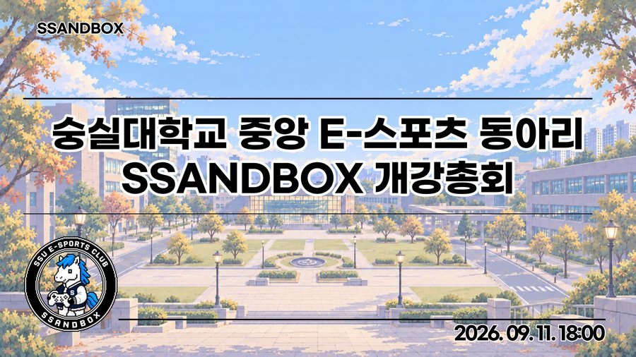
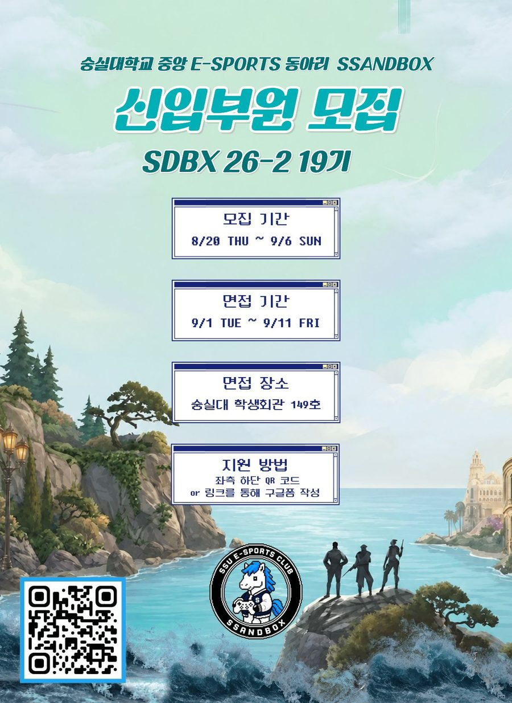
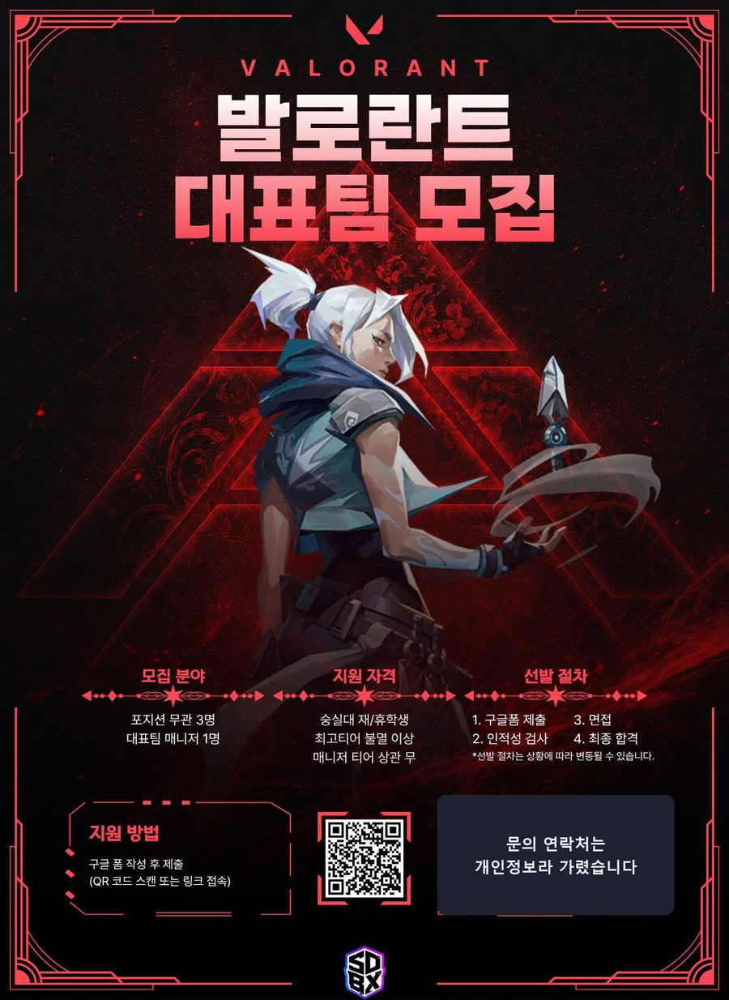
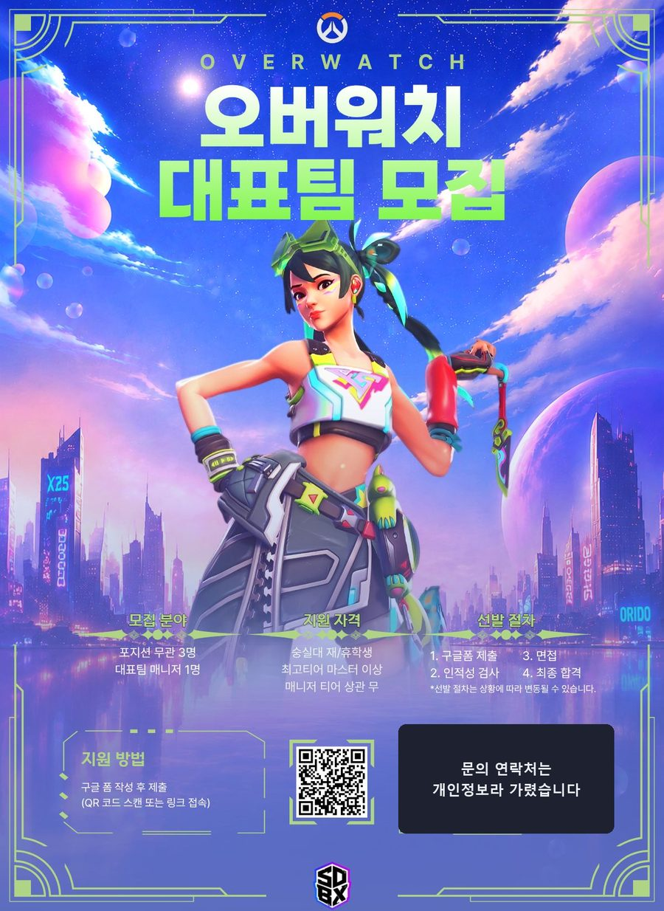
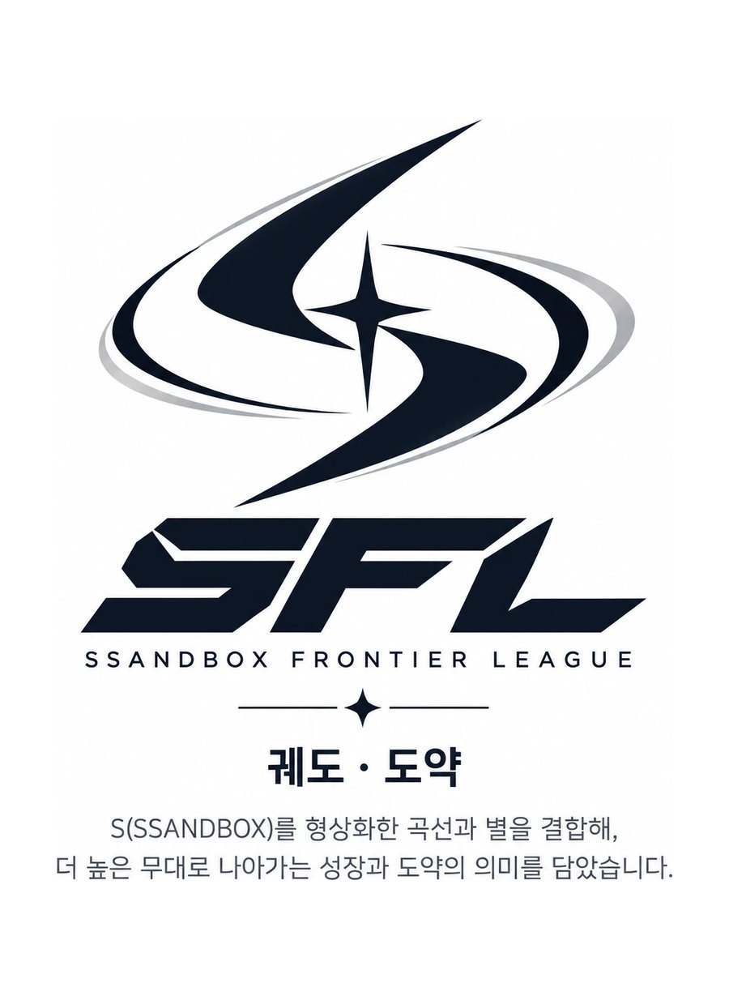
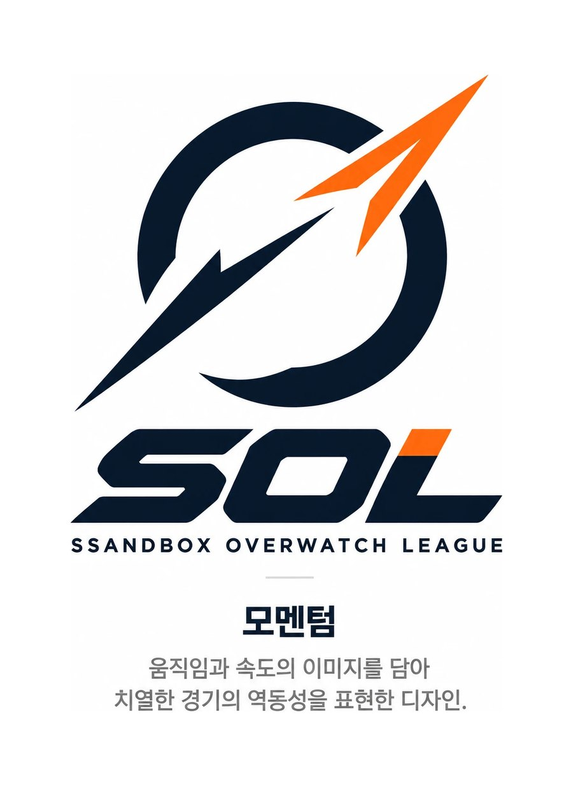
포스터 하단의 문의 연락처는 개인정보라 가려서 올렸습니다.
유지원 · gamedh823@gmail.com
| 과제 | 능력 | 상황 | 행동 | 결과 |
|---|---|---|---|---|
| T02 미니게임 GoGoGo | 자기동기력 | 같은 과제를 낸 사람들과 다른 것을 보여 주고 싶었다. | 프레임워크 없이 순수 JavaScript로 색깔 맞추기·먹구름 피하기·별자리 찰칵·기억력 테스트·타이머 맞추기 5종을 만들고, Web Audio API 레트로 사운드, 콤보·피버타임, 코인·스킨 상점, LocalStorage 영구 저장과 예외 복구(try-catch), 포커스를 잃으면 자동 일시정지까지 직접 설계했다. | 모든 게임이 정확히 30초 뒤 종료되고, 판이 끝나도 코인·스킨·최고 기록이 유지되는 것을 검증 기준으로 확인할 수 있게 공개했다. |
| T03 WONWON STUDIO | 대인관계력 | 포토샵 같은 편집 도구는 처음 쓰는 사람에게 진입장벽이 높았다. | 처음 쓰는 사람의 입장에서 레이어 기반 편집을 최대한 단순하게 설계했다. 이미지·문구·이모지를 얹고 순서를 바꾸며, PNG 내보내기와 템플릿·JSON 백업을 넣었다. 조작은 드래그·더블클릭·Delete·Esc로 통일했다. 기획·디자인·개발을 혼자 맡았다. | 설치와 서버 없이 index.html 하나로 열리고, 새로고침해도 저장한 템플릿이 남는다. |
| T04 오늘의 진짜 정보판 | 자기조절력 | 공개 날씨 값은 실패하거나 늦어질 수 있어서, 화면이 빈 값이나 오래된 값을 정상처럼 보여 줄 위험이 있었다. | Open-Meteo에서 값·단위·출처·조회 시각·기준 시간대를 함께 표시하고, 실패하면 마지막 정상값을 유지하며 실패 원인별로 다른 상태를 보이도록 설계했다. 검증안내서와 체크리스트를 같이 썼다. | GitHub Pages로 공개했고, 통과 기준 체크리스트로 누구나 확인할 수 있다. |
| T05 AI 세션 인수인계 | 대인관계력 | 대화가 끊겨도 다른 AI가 작업을 이어받아야 하는 상황에서, 무엇을 넘겨야 이어지는지 알 수 없었다. | 즐겨찾기 기능의 고정 검사 10개(FAV-01~10)를 먼저 정하고, 인수인계 7항목 문서로 AI A(Claude)에서 AI B(Gemini)로 작업을 넘겼다. | 저장소와 인계 문서만으로 두 번째 세션이 이어받았고, 검사 10개를 두 세션이 나눠 통과한 기록을 비교표로 남겼다. |
| T06 플랜두씨 다이어리 1 | 자기조절력 | 계획과 실제로 한 일을 한곳에서 이어서 돌아볼 도구가 필요했다. | 계획(Plan)→실행(Do)→돌아보기(See)가 하나로 이어지는 다이어리를 만들고, 자료를 Supabase(Postgres) 서버 DB에 저장하도록 했다. 통과 기준 체크리스트와 검증안내서를 같이 썼다. | 새로고침해도 자료가 그대로 남는 앱을 배포했다. |
| T07 플랜두씨 다이어리 2 | 자기동기력 | 로그인이 없던 다이어리(T06)는 자료가 누구에게나 열려 있었다. | 아이디·비밀번호 가입과 로그인을 붙여, 로그인하지 않으면 로그인 화면이 뜨고 로그인한 계정의 계획·할 일·기록만 그 계정에 보이게 했다. 리추얼에서 '오늘 치를 쓴다'는 약속을 정해 지켰다. | 배포 주소에서 계정별로 자료가 분리되어 동작하고, 인증 구현 설명서에 무엇을·왜·어디를·어떻게 확인했는지 남겼다. |
| T08 passkey-vault | 자기동기력 | 비밀번호 없이 나만 들어가는 비공개 영역이 필요했는데, WebAuthn 패스키는 처음 다루는 기술이었다. | @simplewebauthn으로 등록·로그인을 구현하고, 서명한 JWT를 httpOnly 쿠키에 담았으며, 세션이 없으면 비공개 영역과 API를 차단하도록 했다. DB는 Supabase로 두고 서버에서 계정별로 필터링했다. | 배포 주소에서 PC(Windows Hello)와 휴대폰 생체인증으로 등록·로그인이 동작하는 것을 확인했다. |
| T09 나를 말하는 에이전트 | 대인관계력 | 자기소개서에 쓸 재료가 형용사 위주여서, 장면과 근거가 필요했다. | 리추얼 기록 26일치를 전부 읽고 강점 후보 4개 중 근거가 약한 하나를 지워 셋으로 좁혔다. 고난 이야기는 3인칭 초안을 1인칭으로 직접 고쳐 쓰고, 동료 두 명에게 읽혀 '나 같은지, 지어낸 느낌이 있는지'를 물었다. | 강점 지도와 자기소개서 첫 판이 담긴 서사 문서를 완성했다. |
| T10 논문 | 자기동기력 | AI의 답이 질문 내용 때문인지 프롬프트에 곁들인 신호 때문인지 확인된 것이 없었다. | ChatGPT·Gemini·Claude 세 AI에 실험 4개를 반복 수행했다. 본인 소유 계정만 쓰고 AI별 시행 횟수를 같게 맞췄으며, 설계를 바꾼 이유와 시점을 문서에 남겼다. | 논문 PDF와 원자료·분석 스크립트가 담긴 재현 패키지를 공개했다. |
| T11 장편 글쓰기 | 자기조절력 | AI가 쓴 장별 초안에 사실과 다른 문장이 많아서, 그대로는 내 이야기가 될 수 없었다. | 질문 70개에 직접 답하고, 문단을 직접 고칠 수 있는 편집기 웹사이트를 만들어 전 장을 처음부터 끝까지 읽으며 고쳤다. 저장 즉시 파일·백업·git에 남기고, 분량·목차와 본문 일치·중복 문단·금지 문구를 검사하는 도구로 확인했다. | 13장으로 된 장편 원고를 완성해 제출했다. |
| T12 이야기·기록 사이트와 갱신 장치 | 자기조절력 | 한 번 만든 소개 사이트는 시간이 지나면 낡는다. | 새 리추얼 기록을 넣으면 숫자를 다시 세고 능력별 문단 후보를 날짜·근거와 함께 뽑는 스크립트를 만들었다. AI 호출 없이 규칙 기반으로 하고, 내가 승인한 후보만 사이트에 들어가게 했다. | 같은 입력으로 두 번 돌려 결과 파일의 해시가 같음을 확인했고, README 세 단계로 새 폴더에서도 실행된다. |
| 경험 | 능력 | 상황 | 행동 | 결과 |
|---|---|---|---|---|
| SSU DATATHON 2025 (우수상) | 자기동기력 | 공학 논문 62,199건에서 트렌드 분석에 중요한 키워드 필드가 26.38% 비어 있었다. | 결측치를 버리지 않고 논문 제목에서 단어를 역추출해 채우는 사전과 노이즈 필터를 만들고, FAISS 기반 검색 화면까지 구현했다. | 키워드 결측치의 77.39%를 복구해 최종 데이터 충전율 94.0%를 달성했고 우수상을 받았다. |
| 한이음 드림업 2025 (장려상) | 대인관계력 | AI 모델이 내놓는 결과가 응용 소프트웨어 쪽 요구사항과 맞지 않아 연동이 꼬였다. | 전처리 파트를 맡아 AI 모델 실험을 하고 요구사항 정의서와 보고서 등의 문서를 함께 작업했다. AI 모델 결과가 요구사항과 맞지 않을 때 서비스 흐름도와 알고리즘 명세서를 기준으로 인터페이스를 다시 정의했다. | 생성 이미지가 서비스(Django, AWS S3/RDS)에 바로 반영되도록 연동해 장려상을 받았다. |
| 학교 중앙동아리 홍보국장 | 자기조절력 | 휴학 중에도 홍보국장 일을 맡고 있었는데, 낮에는 알레프 수업이 있었다. | 수업이 끝난 뒤 집에서 홍보물을 만들고 다른 국원이 만든 개강총회 발표자료를 다듬었다. 신입부원 모집·대표팀 모집 포스터, 대학 교류전 화면, 자체 리그 로고(SFL·SOL)도 AI 도구에 지시하는 바이브코딩으로 만들었다. | 홍보물에 대한 반응이 좋았고, 맡은 일을 중간에 놓지 않고 이어 갔다. |